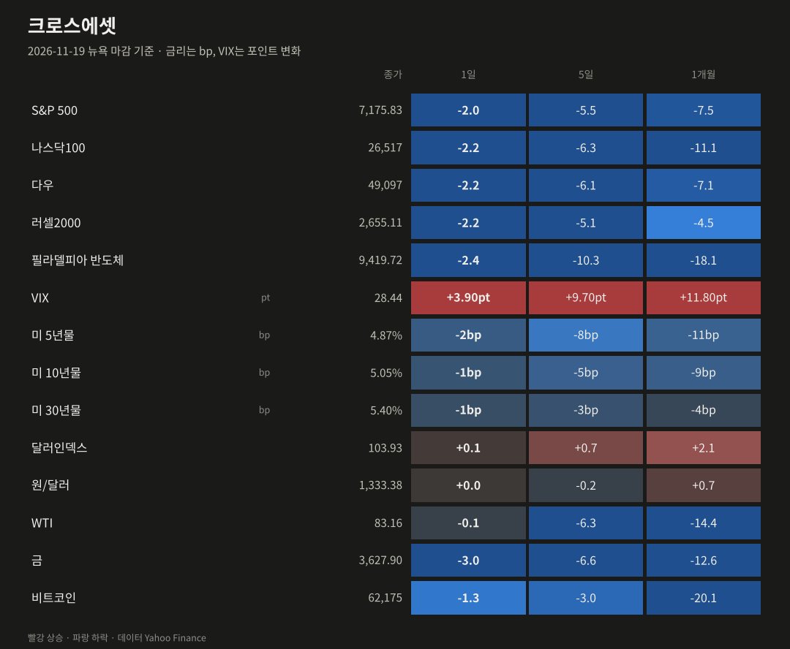
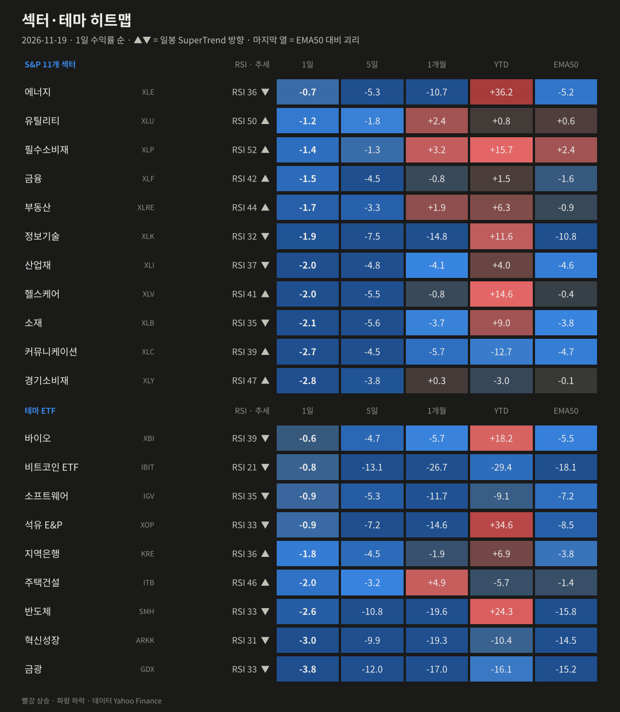
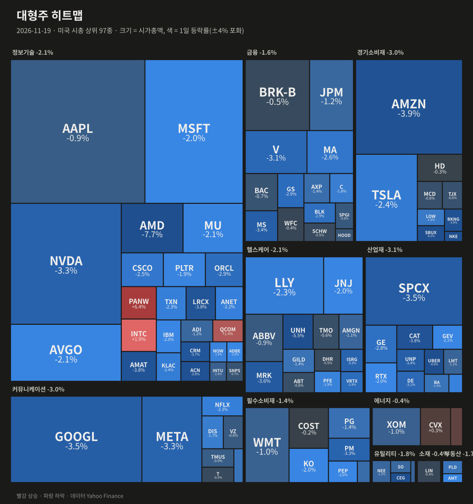
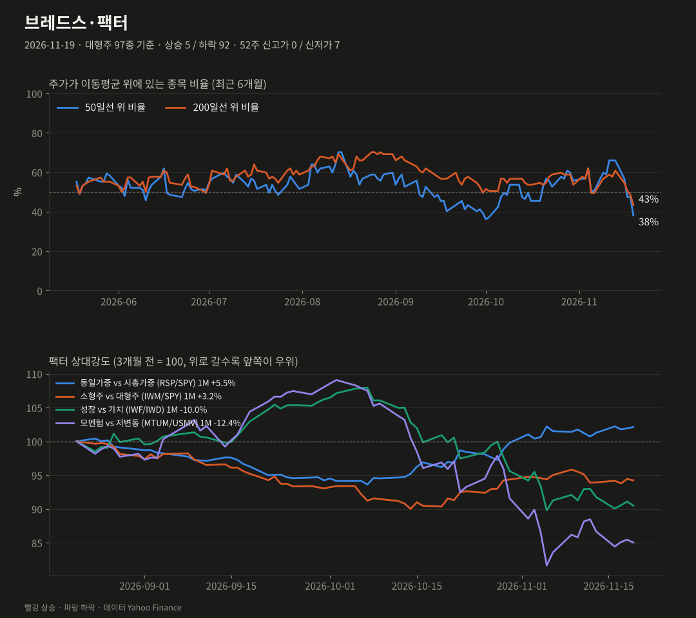
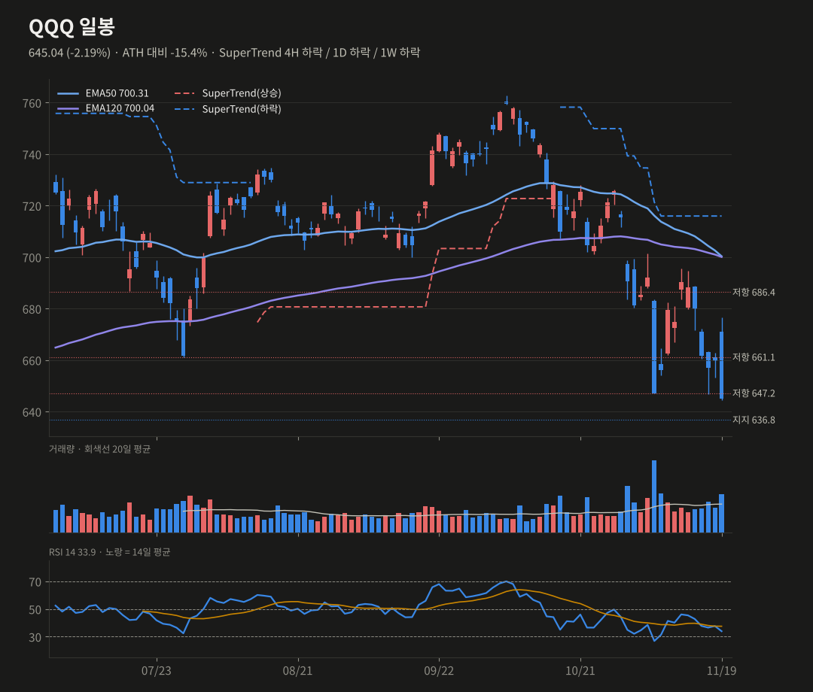
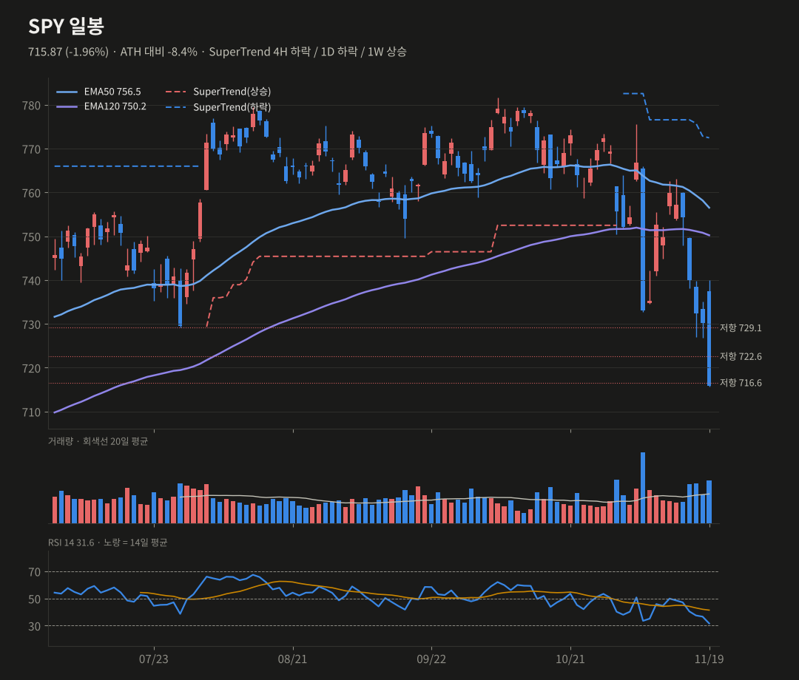
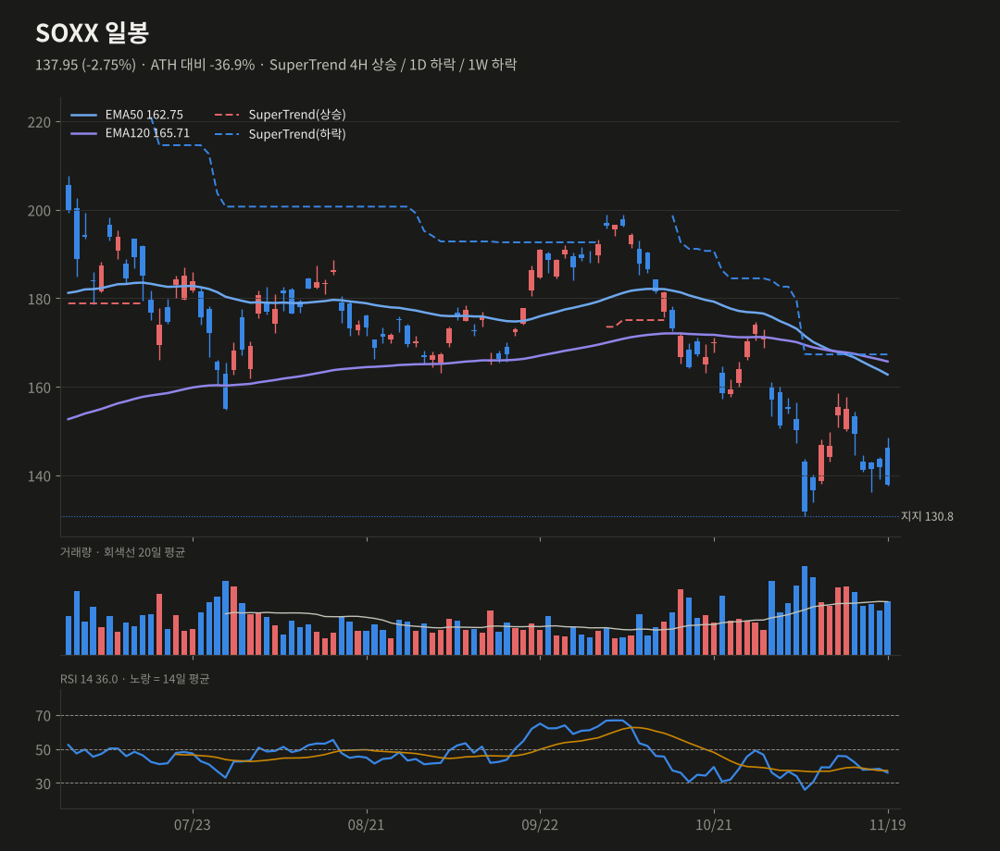
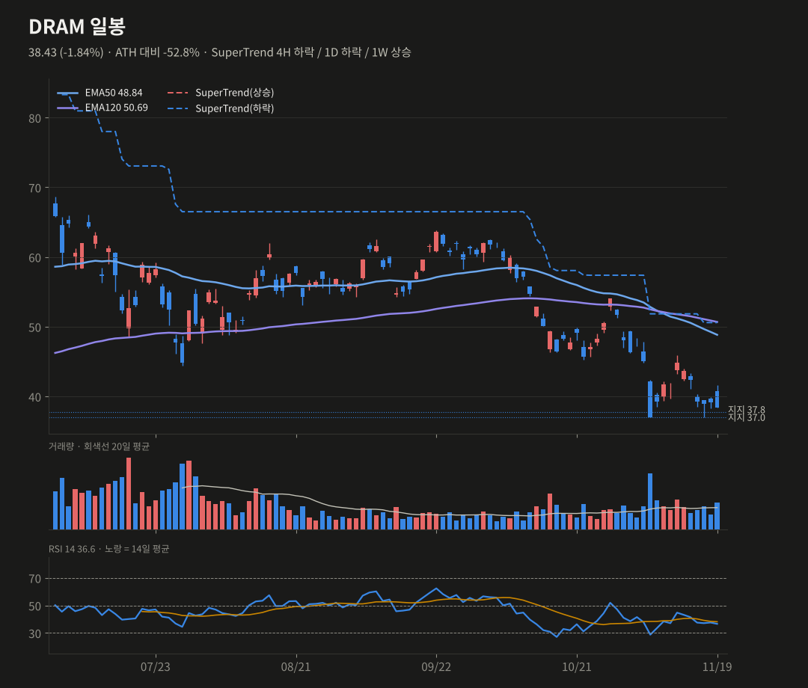

미증시 마감 브리핑
11/19(목) 뉴욕 마감 기준 · 생성 2026-11-20 07:41 KST
앤트로픽 상장 첫날 AI주가 밀리며 S&P −2.0%, 나스닥100 −2.2%였어요. 오른 종목은 5개뿐이에요.
S&P 5007,175.83-2.02%
나스닥10026,517-2.21%
다우49,097-2.19%
러셀20002,655.11-2.18%
반도체(SOX)9,419.72-2.41%
VIX28.44+3.90pt
미 10년물5.05%-1.40bp
원/달러1,333.38+0.03%
요약
- 앤트로픽 상장 첫날 AI주가 밀려 S&P −2.0%, 나스닥100 −2.2%예요.
- AMD −7.7%(공매도 보고서), 엔비디아 −3.3%로 6일째 내렸어요.
- 오른 종목은 5/97, VIX 28.4예요. QQQ 주봉 추세가 하락으로 바뀌었어요.
- SPY 705.4, QQQ 636.8이 다음 지지선이고, 오늘 밤 옵션 만기예요.
종합 판단
앤트로픽 상장 첫날 AI주에서 돈이 빠지는 흐름이 나오면서, 엔비디아 실적 뒤에도 버티던 반도체와 대형 기술주까지 무너졌어요. QQQ는 주봉 SuperTrend가 하락으로 바뀌었고 SPY는 주봉 EMA50 아래로 내려가, 추세 신호가 단기 조정에서 중기 하락 쪽으로 넘어갔어요. 다만 오른 종목 5개, SPY 4H RSI 27.5는 투매에 가까운 과매도라 기술적 반등 여지도 커졌어요. 금요일 옵션 만기 뒤 주간 종가가 QQQ 649.6, SPY 724.0을 되찾는지가 확인 조건이에요. 네 종목 모두 단기·스윙 확률을 낮췄어요(스윙 하한 25%).
앤트로픽 상장 첫날 AI주에서 돈이 빠지는 흐름이 나오면서, 엔비디아 실적 뒤에도 버티던 반도체와 대형 기술주까지 무너졌어요. QQQ는 주봉 SuperTrend가 하락으로 바뀌었고 SPY는 주봉 EMA50 아래로 내려가, 추세 신호가 단기 조정에서 중기 하락 쪽으로 넘어갔어요. 다만 오른 종목 5개, SPY 4H RSI 27.5는 투매에 가까운 과매도라 기술적 반등 여지도 커졌어요. 금요일 옵션 만기 뒤 주간 종가가 QQQ 649.6, SPY 724.0을 되찾는지가 확인 조건이에요. 네 종목 모두 단기·스윙 확률을 낮췄어요(스윙 하한 25%).
무엇이 시장을 움직였나
- 앤트로픽 상장(ANT): 공모가 83달러에서 첫 거래 111.5달러(+34%)로 시작해 97.17달러(+17.1%)로 마감했어요(Stocktitan). 첫 거래 직후 지수가 밀렸고, 개인 투자자들이 앤트로픽을 사려고 다른 AI주를 팔았다는 분석이 나왔어요(Yahoo Finance, Vanda 자료).
- AMD −7.7%: 헌터브룩이 공매도 포지션을 공개하며, AMD 칩이 미국 제재 대상 중국 서버 업체로 흘러갔는지 문제를 제기했어요(Yahoo Finance). 엔비디아는 −3.3%로 6거래일 연속 내렸고, 브로드컴·마이크론도 −2.1%였어요. 반도체 지수는 −2.4%예요.
- 장중 반전: QQQ는 676.5까지 올랐다가 645.0으로 마감해 고점 대비 4.6% 밀렸어요. VIX는 28.4(+3.9pt)로 올랐어요. AI 안전성, 투자 붐의 지속성, 민주당 주도 의회에 대한 불안이 겹쳤다는 해석이에요(Yahoo Finance).
- 업종 전반 약세: UNH −5.6%로 5거래일 −18% 흐름이에요(Yahoo Finance). 나이키 −5.5%, 우버 −4.6%, 스타벅스 −4.3%였고, 월마트는 매출 1,888억 달러(예상 1,872억)에 연간 전망을 올렸지만 −1.0%였어요.
- 금 −3.1%(3,628달러)로 이틀 연속 급락했고 비트코인은 −1.3%예요. 10년물은 5.05%(−1.4bp)로 거의 그대로였어요.
장 마감 후·시간외
- 인튜이트(INTU) −9.8%, 로스스토어(ROST) −5.2%로 실적 발표 뒤 밀렸어요. 앤트로픽은 96.5달러(−0.7%)예요.
- QQQ 644.9, SPY 715.7, SOXX 137.8, DRAM 38.4로 시간외는 보합이고, 엔비디아는 +0.5%예요.

| 자산 | 종가 | 1일 | 5일 | 1개월 |
|---|---|---|---|---|
| S&P 500 | 7175.83 | -2.02% | -5.49% | -7.49% |
| 나스닥100 | 26517.05 | -2.21% | -6.26% | -11.08% |
| 다우 | 49097.06 | -2.19% | -6.12% | -7.11% |
| 러셀2000 | 2655.11 | -2.18% | -5.14% | -4.53% |
| 필라델피아 반도체 | 9419.72 | -2.41% | -10.35% | -18.13% |
| VIX | 28.44 | +3.90pt | +9.70pt | +11.80pt |
| 미 5년물 | 4.866 | -1.8bp | -7.9bp | -10.6bp |
| 미 10년물 | 5.052 | -1.4bp | -5.1bp | -9.4bp |
| 미 30년물 | 5.401 | -1.1bp | -3.2bp | -3.8bp |
| 달러인덱스 | 103.93 | +0.07% | +0.74% | +2.11% |
| 원/달러 | 1333.38 | +0.03% | -0.22% | +0.71% |
| WTI | 83.16 | -0.12% | -6.29% | -14.40% |
| 금 | 3627.9 | -3.05% | -6.62% | -12.58% |
| 비트코인 | 62174.87 | -1.29% | -3.05% | -20.06% |

| 섹터·테마 | 1일 | 5일 | 1개월 | YTD | RSI | 일봉 추세 |
|---|---|---|---|---|---|---|
| 바이오 XBI | -0.63% | -4.68% | -5.67% | +18.2% | 39 | 하락 |
| 에너지 XLE | -0.65% | -5.35% | -10.67% | +36.2% | 36 | 하락 |
| 비트코인 ETF IBIT | -0.79% | -13.08% | -26.67% | -29.4% | 21 | 하락 |
| 소프트웨어 IGV | -0.87% | -5.27% | -11.69% | -9.1% | 35 | 하락 |
| 석유 E&P XOP | -0.95% | -7.19% | -14.61% | +34.6% | 33 | 하락 |
| 유틸리티 XLU | -1.24% | -1.83% | +2.40% | +0.8% | 50 | 상승 |
| 필수소비재 XLP | -1.45% | -1.32% | +3.16% | +15.7% | 52 | 상승 |
| 금융 XLF | -1.49% | -4.52% | -0.82% | +1.5% | 42 | 상승 |
| 부동산 XLRE | -1.70% | -3.34% | +1.95% | +6.3% | 44 | 상승 |
| 지역은행 KRE | -1.79% | -4.50% | -1.93% | +6.9% | 36 | 상승 |
| 정보기술 XLK | -1.90% | -7.53% | -14.77% | +11.6% | 32 | 하락 |
| 산업재 XLI | -2.00% | -4.77% | -4.13% | +4.0% | 37 | 하락 |
| 주택건설 ITB | -2.03% | -3.19% | +4.86% | -5.7% | 46 | 상승 |
| 헬스케어 XLV | -2.05% | -5.52% | -0.83% | +14.6% | 41 | 상승 |
| 소재 XLB | -2.06% | -5.58% | -3.70% | +9.0% | 35 | 하락 |
| 반도체 SMH | -2.62% | -10.81% | -19.62% | +24.3% | 33 | 하락 |
| 커뮤니케이션 XLC | -2.67% | -4.46% | -5.70% | -12.7% | 39 | 상승 |
| 경기소비재 XLY | -2.79% | -3.80% | +0.30% | -3.0% | 47 | 상승 |
| 혁신성장 ARKK | -3.00% | -9.90% | -19.30% | -10.4% | 31 | 하락 |
| 금광 GDX | -3.77% | -12.02% | -16.97% | -16.1% | 33 | 하락 |

| 상승 상위 | 1일 | 거래량(20일 대비) | 하락 상위 | 1일 | 거래량 |
|---|---|---|---|---|---|
| PANW | +6.42% | x2.78 | AMD | -7.72% | x1.89 |
| INTC | +1.92% | x0.9 | UNH | -5.55% | x3.52 |
| QCOM | +1.38% | x0.95 | NKE | -5.45% | x1.22 |
| COP | +0.44% | x0.65 | UBER | -4.60% | x1.51 |
| CVX | +0.30% | x1.04 | SBUX | -4.25% | x1.51 |
| COST | -0.25% | x0.85 | CEG | -4.08% | x0.96 |

대형주 97종: 상승 5 / 하락 92 · 50일선 위 38.1% (전일 47.4%, 5일 전 66.0%) · 200일선 위 43.3% · 52주 신고가 0 / 신저가 7
오른 종목 5, 내린 종목 92로 거의 모든 종목이 내렸어요. SMA50 위 비율은 47.4%에서 38.1%로 떨어져 5일 전(66.0%)보다 28%p 낮아졌어요. 52주 신저가 7개, 신고가 0개예요. 동일가중(RSP −1.76%)이 시총가중(SPY −1.96%)보다 덜 빠져 대형 기술주 중심 매도였어요.
| 팩터 스프레드 | 1일 | 5일 | 1개월 |
|---|---|---|---|
| 동일가중 vs 시총가중 (RSP/SPY) | +0.20% | +1.41% | +5.50% |
| 소형주 vs 대형주 (IWM/SPY) | -0.23% | +0.36% | +3.20% |
| 성장 vs 가치 (IWF/IWD) | -0.69% | -2.69% | -10.03% |
| 모멘텀 vs 저변동 (MTUM/USMV) | -0.51% | -3.91% | -12.38% |
기술적 분석 · 확률
TradingView 설정과 맞춘 지표(EMA50·EMA120, SuperTrend ATR20×4, RSI14, MACD 12/26/9). 확률은 차트 기반 추정치예요.
QQQ 645.04 -2.19%
SuperTrend 4H 하락 / 1D 하락 / 1W 하락 · RSI 33.91
단기 반등 40% (-10) · 스윙 상승 25% (-5)
장중 676.5까지 올랐다가 645.0으로 밀려(−2.2%) 주봉 SuperTrend(649.6) 아래로 내려갔어요. 주봉 SuperTrend가 하락(757.5)으로, 4H SuperTrend도 하락(693.6)으로 바뀌었고 주봉 MACD선이 0 아래로 내려갔어요(금요일 마감 전 기준). 4H RSI 32.2, 일봉 RSI 33.9로 과매도 직전이에요. 추세 전환을 반영해 단기 10%p, 스윙 5%p를 낮췄어요.
상방 649.6 회복 → 661.1, 686.4
하방 636.8 이탈 → 629.2, 583.3
SuperTrend 4H 하락 / 1D 하락 / 1W 하락 · RSI 33.91
단기 반등 40% (-10) · 스윙 상승 25% (-5)
장중 676.5까지 올랐다가 645.0으로 밀려(−2.2%) 주봉 SuperTrend(649.6) 아래로 내려갔어요. 주봉 SuperTrend가 하락(757.5)으로, 4H SuperTrend도 하락(693.6)으로 바뀌었고 주봉 MACD선이 0 아래로 내려갔어요(금요일 마감 전 기준). 4H RSI 32.2, 일봉 RSI 33.9로 과매도 직전이에요. 추세 전환을 반영해 단기 10%p, 스윙 5%p를 낮췄어요.
상방 649.6 회복 → 661.1, 686.4
하방 636.8 이탈 → 629.2, 583.3
SPY 715.87 -1.96%
SuperTrend 4H 하락 / 1D 하락 / 1W 상승 · RSI 31.59
단기 반등 40% (-5) · 스윙 상승 25% (-5)
장중 739.9까지 올랐다가 715.9로 마감했어요(−2.0%). 4H RSI가 27.5로 30 아래로 내려갔고, 주봉 EMA50(724.0)도 내줬어요(금요일 마감 전 기준). 일봉 MACD 히스토그램은 −2.15→−3.25로 커졌어요. 주봉 SuperTrend(705.4)가 남은 방어선이고, 그 아래는 697.8, 689.7이에요.
상방 724.0 회복(주봉 EMA50) → 729.1, 732.7
하방 705.4 이탈(주봉 SuperTrend) → 697.8, 689.7
SuperTrend 4H 하락 / 1D 하락 / 1W 상승 · RSI 31.59
단기 반등 40% (-5) · 스윙 상승 25% (-5)
장중 739.9까지 올랐다가 715.9로 마감했어요(−2.0%). 4H RSI가 27.5로 30 아래로 내려갔고, 주봉 EMA50(724.0)도 내줬어요(금요일 마감 전 기준). 일봉 MACD 히스토그램은 −2.15→−3.25로 커졌어요. 주봉 SuperTrend(705.4)가 남은 방어선이고, 그 아래는 697.8, 689.7이에요.
상방 724.0 회복(주봉 EMA50) → 729.1, 732.7
하방 705.4 이탈(주봉 SuperTrend) → 697.8, 689.7
SOXX 137.95 -2.75%
SuperTrend 4H 상승 / 1D 하락 / 1W 하락 · RSI 36.03
단기 반등 40% (-10) · 스윙 상승 25% (-5)
장중 148.6까지 올랐다가 137.95로 밀리며(−2.75%) 4H·일봉 MACD 히스토그램이 다시 아래로 꺾였어요(4H −0.08→−0.20, 일봉 −0.13→−0.28). AMD가 공매도 보고서로 −7.7% 빠지며 가장 큰 부담이었어요. 4H SuperTrend(134.5)까지 2.5% 남았고, 그 아래는 130.8이에요.
상방 146.3(당일 시가) 회복 → 151.1(주봉 EMA50)
하방 134.5 이탈(4H SuperTrend) → 130.8
SuperTrend 4H 상승 / 1D 하락 / 1W 하락 · RSI 36.03
단기 반등 40% (-10) · 스윙 상승 25% (-5)
장중 148.6까지 올랐다가 137.95로 밀리며(−2.75%) 4H·일봉 MACD 히스토그램이 다시 아래로 꺾였어요(4H −0.08→−0.20, 일봉 −0.13→−0.28). AMD가 공매도 보고서로 −7.7% 빠지며 가장 큰 부담이었어요. 4H SuperTrend(134.5)까지 2.5% 남았고, 그 아래는 130.8이에요.
상방 146.3(당일 시가) 회복 → 151.1(주봉 EMA50)
하방 134.5 이탈(4H SuperTrend) → 130.8
DRAM 38.43 -1.84%
SuperTrend 4H 하락 / 1D 하락 / 1W 상승 · RSI 36.62
단기 반등 40% (-5) · 스윙 상승 25%
38.43(−1.8%)으로 주봉 EMA120(38.5) 아래로 내려갔어요(금요일 마감 전 기준). 금요일 종가로 38.5를 되찾지 못하면 상장 후 처음으로 장기선 아래에서 한 주를 마쳐요. 마이크론은 −2.1%였어요. 다음 지지는 37.8, 37.0이고 주봉 SuperTrend는 29.4예요. 스윙은 하한(25%)이라 그대로 뒀어요.
상방 38.5 회복 → 41.5, 44.4
하방 37.8 이탈 → 37.0, 29.4(주봉 SuperTrend)
SuperTrend 4H 하락 / 1D 하락 / 1W 상승 · RSI 36.62
단기 반등 40% (-5) · 스윙 상승 25%
38.43(−1.8%)으로 주봉 EMA120(38.5) 아래로 내려갔어요(금요일 마감 전 기준). 금요일 종가로 38.5를 되찾지 못하면 상장 후 처음으로 장기선 아래에서 한 주를 마쳐요. 마이크론은 −2.1%였어요. 다음 지지는 37.8, 37.0이고 주봉 SuperTrend는 29.4예요. 스윙은 하한(25%)이라 그대로 뒀어요.
상방 38.5 회복 → 41.5, 44.4
하방 37.8 이탈 → 37.0, 29.4(주봉 SuperTrend)




일정
- 11/20 월간 옵션 만기(셋째 금요일)·주간 종가
- 11/24 델·ADI·메드트로닉 실적
- 11/26 추수감사절 휴장, 11/27 조기 폐장
출처
- Stock market today: Dow sinks 1,100 points, S&P 500 and Nasdaq tank 2% as Anthropic IPO grabs spotlight (Yahoo Finance)
- Nvidia, Broadcom, and Micron stocks decline as Anthropic goes public (Yahoo Finance)
- Anthropic IPO live: ANT first trading day (Stocktitan)
데이터 Yahoo Finance·Nasdaq. 색은 한국식(빨강 상승·파랑 하락). 투자 판단의 참고 자료예요. 지난 브리핑